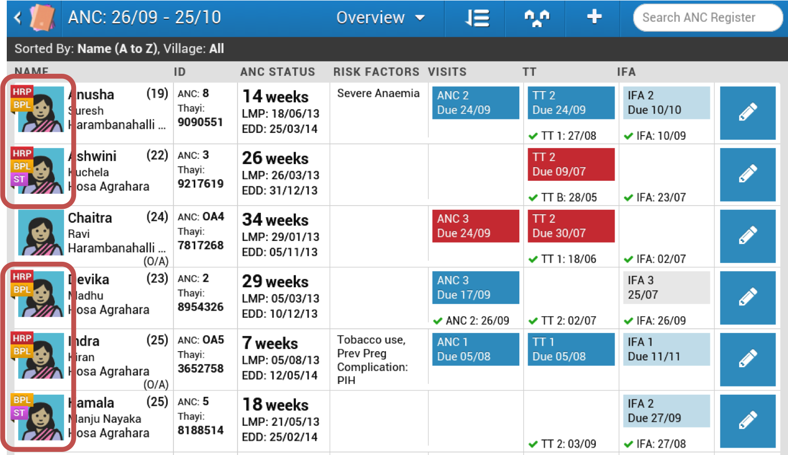
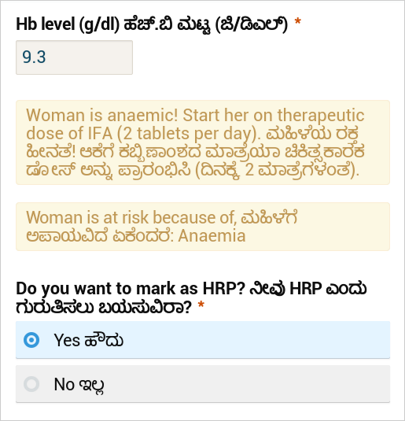
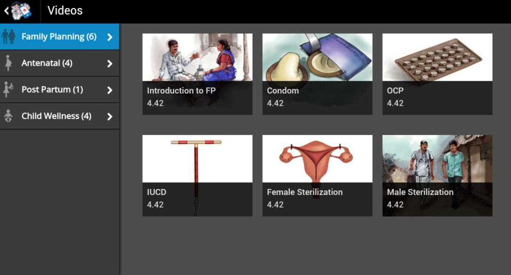

Health worker workflow support and reporting features support all cadres of frontline health workers in multiple geographies to provide quality care and quality data that is required for local and national health systems performance monitoring. Web forms embedded into the application contain input constraint and decision logic that enables health workers to collect a client’s health information that is key for flagging high risk patients, potential diagnosis, and/or need for referral to a district or even provincial level health facility. These forms also provide response prompts for health workers depending on answers given.
Based on inputs and decision logic, scheduling can also be automated so health workers can prioritize clients based on risk and/or date of services due. These job aids built into the system alleviate health workers’ day-to-day burdens and allow for greater adherence to care standards.
OpenSRP uses advanced, multi-parameter scheduling logic to ensure frontline health workers provide services in alignment with national and global health standards of care. Health service reminders are displayed as color-coded alerts to the health worker based on the urgency of the service due, ensuring that clients receive appropriate and timely healthcare.


OpenSRP has the ability to automatically profile and flag patients who are at high risk for adverse health outcomes. Profiling logic can be customized to the local health setting and is embedded in the form logic. Health workers are alerted to high risk cases when they look up the patient and at the point of data entry. Customized messages and decision support in the forms are based on the specific risk profile of the client and serve to remind the health worker of appropriate medical guidelines and protocols.


OpenSRP supports multimedia use for clients, such as health education and counseling videos. Health workers can easily switch from their smart register view to the video module during client encounters to couple health service provision with client education and counseling.
